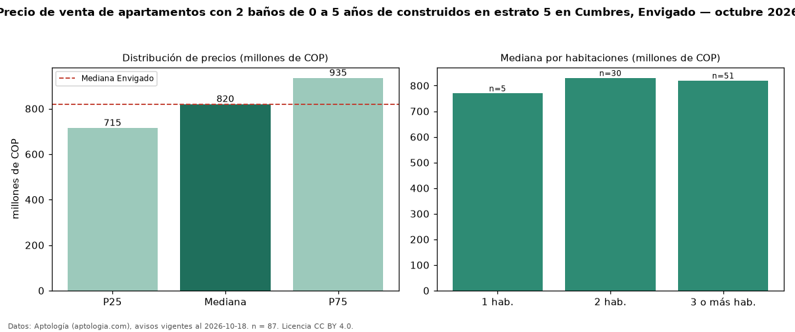

Precio de venta de apartamentos con 2 baños de 0 a 5 años de construidos en estrato 5 en Cumbres, Envigado — octubre 2026
Con 87 avisos vigentes, el precio mediano de apartamentos con 2 baños de 0 a 5 años de construidos en estrato 5 en venta en Cumbres, Envigado es COP 820 millones. Eso es 6 % más que la mediana de los apartamentos con 2 baños en estrato 5 en venta de Cumbres (COP 775 millones, n = 116); este segmento reúne el 75 % de esos avisos. Por metro cuadrado, la mediana es COP 8,52 millones/m² (n = 87), 1 % por debajo de los apartamentos con 2 baños en estrato 5 en venta de Cumbres (COP 8,59 millones/m²). El área mediana anunciada es 96 m². El segmento con más oferta es el de 3 o más habitaciones (51 avisos, mediana COP 820 millones); pasar de 1 habitación a 3 o más habitaciones cambia la mediana +6 %. La administración mediana declarada es COP 617.000 al mes (n = 55). La mediana de todos los apartamentos en venta de Envigado es COP 820 millones (+0 % de diferencia). La mitad central de los avisos va de COP 715 millones a COP 935 millones (razón 1,3), una dispersión baja. Datos: Aptología (aptologia.com), CC BY 4.0 — https://www.aptologia.com/venta/envigado/cumbres. Archivos: PDF, CSV con las cifras y gráfica PNG.

| Avisos únicos | 87 |
|---|---|
| Percentil 25 | COP 715.000.000 |
| Mediana | COP 820.000.000 |
| Percentil 75 | COP 935.000.000 |
| Mediana por m² | COP 8.522.727 |
Fuente: avisos vigentes de portales inmobiliarios recopilados por Aptología, deduplicados (mínimo 30 avisos únicos por celda). Precios pedidos, no cerrados. Fecha: 2026-10-18.